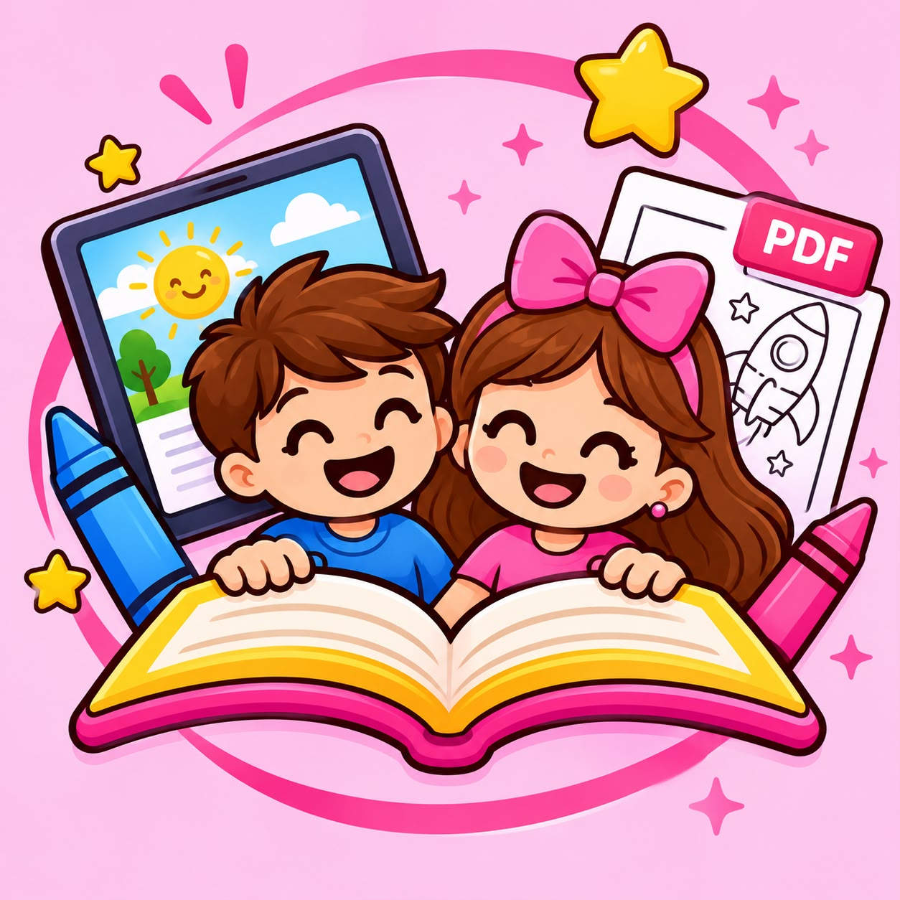

Um mundo de criatividade esperando por você!
Descubra livrinhos especiais para transformar cada momento em uma aventura cheia de cores.

★ Novos desenhos todo mês ● PDF instantâneoMais vendidos
Ver todos →Coleções temáticas
Explorar catálogo →Chegou agora
Kits com desconto
Ideias de presente
O que é a ToToyLandia?
A ToToyLandia é uma loja de livros de colorir em PDF, feita para as famílias que querem atividades do dia seguinte sem sair de casa. Você escolhe o livrinho, paga pelo checkout seguro da Kiwify, recebe o PDF no seu e-mail e imprime quantas vezes quiser — na folha A4 da sua casa.
Como recebo o livrinho?
Assim que o pagamento é confirmado pela Kiwify, o PDF é enviado automaticamente para o seu e-mail. Em minutos seu pequeno já está colorindo.
Posso imprimir mais de uma vez?
Pode! O PDF é seu para imprimir sempre que precisar — vale para folhas novas, aniversários ou para a turma toda.
Que papel vocês recomendam?
Folha sulfite A4 (comum) funciona bem. Para canetinhas, preferimos papel de 80 g/m² ou mais para o desenho não vazar.
O pagamento é seguro?
Sim. Toda a transação é processada na plataforma Kiwify, com Pix, cartão ou boleto. Não pedimos dados de cartão no site.